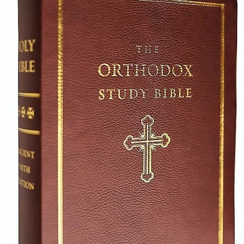
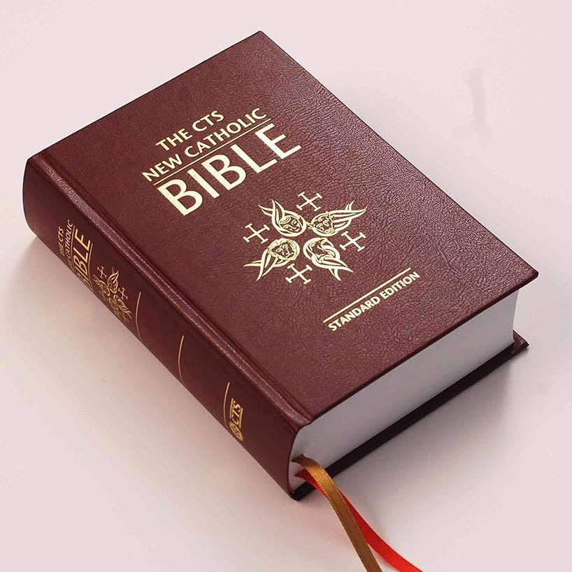
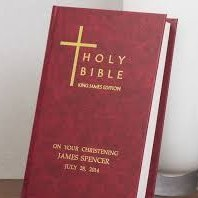

"All Scripture is God-breathed and is useful for teaching, rebuking, correcting and training in righteousness."
- 2 Timothy 3:16
The first verse of the Bible in Hebrew, Genesis 1:1, acts as a foundational, seed-like summary that defines the theological, narrative, and thematic scope of the entire biblical story.
בְּרֵאשִׁית בָּרָא אֱלֹהִים אֵת הַשָּׁמַיִם וְאֵת הָאָרֶץ
(Bereshit bara Elohim et hashamayim ve'et ha'aretz)
"In the beginning God created the heavens and the earth."
"Elohim" (God) is the Subject: The Bible is primarily about God, not humanity. The verb bara (created) is used exclusively for divine activity, establishing God as the sole initiator.
"Heavens and Earth": A merism (figure of speech) indicating the totality of the cosmos—spiritual and physical. It sets the scope of God’s sovereignty over everything.
Plurality in Unity: Elohim is a plural noun, hinting at the complexity of God (The Trinity), while the verb bara is singular, indicating One God.
Creation Ex Nihilo: It immediately distinguishes God as the eternal Creator from the created universe, bringing matter into existence from nothing and establishing total authority.
"Bereshit" (In the beginning): Indicates the start of time, pointing towards an ultimate "end" (the new creation in Revelation).
A "Good" Creation: Establishes God's original intent as good. The rest of the Bible explores how that goodness was lost (the Fall) and how it will be restored through the Word (John 1:1).
The Aleph-Tav (את): Between "God" and "the heavens" are the first and last letters of the Hebrew alphabet. This points directly to Jesus Christ, the "Alpha and Omega," the agent of creation.
Seven Hebrew Words: The verse contains exactly seven Hebrew words, embedding the structure of the seven-day creation week and the biblical concept of divine perfection.

The Eastern Orthodox Old Testament is based primarily on the Septuagint (the ancient Greek translation of the Hebrew Scriptures used by Jesus and the Apostles). It represents the oldest Christian biblical tradition.
It contains the 27 NT books, but has the largest OT (up to 51 books). It includes the Deuterocanonicals plus additional texts like 3 Maccabees, Psalm 151, and the Prayer of Manasseh.
Written by ancient Hebrew prophets, kings, sages, and the first-century Apostles. The Orthodox view honors the Septuagint translators as being guided by the Holy Spirit.
It teaches that Scripture is the pinnacle of Holy Tradition, not separate from it. It heavily emphasizes Theosis (the process of becoming united with God) within the Divine Liturgy.

The Catholic canon was influenced by St. Jerome's Latin Vulgate in the 4th Century. The 73-book list was formally dogmatized at the Council of Trent (1546 AD) in response to the Protestant Reformation.
It consists of 46 Old Testament books and 27 New Testament books. It includes the 7 Deuterocanonical books (Tobit, Judith, 1 & 2 Maccabees, Wisdom, Sirach, Baruch).
Penned by God's chosen prophets and Apostles. The Church teaches that God is the primary author of Scripture, actively inspiring the human authors without error.
Divine Revelation flows from two equal streams: Sacred Scripture and Sacred Tradition. The Bible must be interpreted authentically by the Magisterium (Pope and bishops).

During the 16th-century Reformation, leaders like Martin Luther and John Calvin rejected the Greek Septuagint additions and returned strictly to the Hebrew Masoretic Text for the Old Testament.
It contains 39 Old Testament books and 27 New Testament books. The Apocrypha/Deuterocanonical books are excluded from the canon, viewed as historically interesting but not divinely inspired.
Written by Hebrew prophets, leaders, and the New Testament Apostles. Protestants emphasize that the original Hebrew, Aramaic, and Greek manuscripts alone are the breathed-out Word of God.
The absolute foundation is Sola Scriptura (Scripture Alone). It teaches that the Bible is the supreme, final, and only infallible authority for Christian faith and practice.